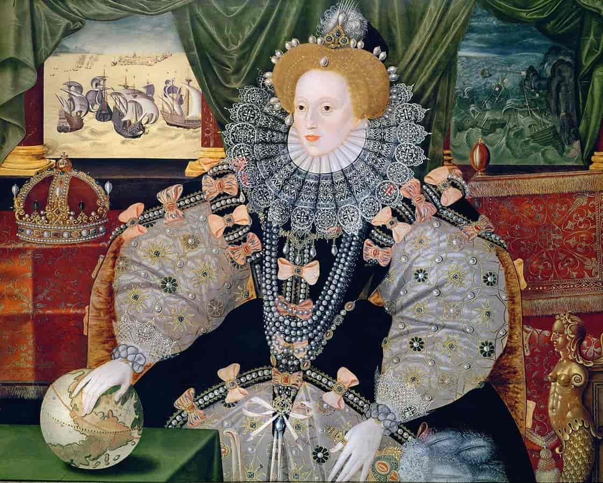

What Happened On This Day
Using historical record, Daily Anne Boelyn will send an email everyday with information about what happened to her on that particular day, 500 hundred years ago.
This email can either be received daily, weekly, or monthly.
About Anne
Anne Boelyn was the second wife of Henry VIII. Botn in the 1503, she would end up executed on the 19th May 1536. In that time she was an important figure in the start of the English Reformation.
The Wives on Henry VIII
Henry VIII is perhaps most famous for having six wives, and the famous rhyme "Divorced, Beheaded, Died, Divorced, Beheaded, Survived"
- Catherine of Aragon - Henry's first wife, initially intended to marry his brother. When she did not give birth to a son, Henry ended up divorcing her.
- Anne Boelyn
- Jane Seymor - believed to be Henry's favourite wife. She is the mother of his only legitimate son Edward, though died shortley after giving birth to him.
- Anna of Cleeves - they were married for a very short time, and she was given the title of beloved sister, and a palace after the divorce.
- Katherine Howard - the youngest wife, being only 17 when they married. She was executed due to accusations she was having an affair.
- Catherine Parr - the surviving wife.
Children
Anne Boleyn and Henry only had one surviving child, Elizabeth. Although Henry wanted a son as an heir, Elizabeth became the longest ruling Tudor monarch. She did not have any children, and the throne went to the Stuarts.